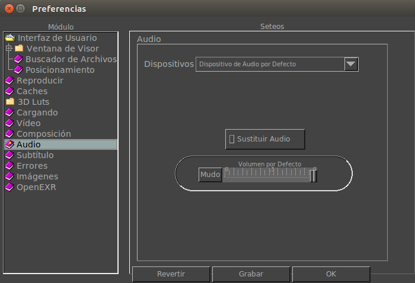

La ficha de Preferencias de Audio te permite configurar cómo funciona el audio.

Conductor
Aqui puede cambiar el conductor por defecto cuando el visor comienza.
Por defecto, y por ahora, sólo ALSA en Linux y WAVE en Windows.
Aparatos
Aqui puede setear el equipo para reproducir audio. Por defecto, el equipo por defecto es usado.
El volumen de la reproducción al comenzar el reproductor puede ser seteado aquí. También puedes seleccionar el boton de mudo donde no se reproduce ningun sonido.